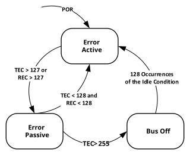

Every CAN controller checks the messages on the bus for the following errors: bit, stuff, CRC, form and ACK errors. Whenever the controller detects an error, an error frame is transmitted that deletes the message on the bus. Error frames are always signaled using the nominal bit rate.
Error detection and fault confinement are described in the ISO11898-1:2015. CxTREC contains the error counters TEC and REC (TERRCNTx, RERRCNTx). CxTREC contains the Error Warning and Error state bits. TEC and REC increment and decrement according to ISO11898-1:2015 specifications.
Figure 38-47 illustrates the different Error states of the CAN FD Protocol module. The module starts in the Error Active state. If the TEC or REC exceeds 127, the module transitions to the Error Passive state. If the TEC exceeds 255, the module will transition to the Bus Off state.
The module transmits active error frames when in an Error Active state. It will transmit passive error frames while in an Error Passive state. When the module is in bus Off, the CxTX pin is always driven high and no dominant bits are transmitted.
To avoid the module from transitioning to the Error Passive state, the module will alert the application when the TEC or REC reaches 96, using the CERRIF Interrupt Flag (see CAN Bus Error Interrupt (CERRIF)). This allows the application to take action before it enters the Error Passive state.

The error-free message counter, together with the error counters and error flags, can be used to determine the quality of the bus.